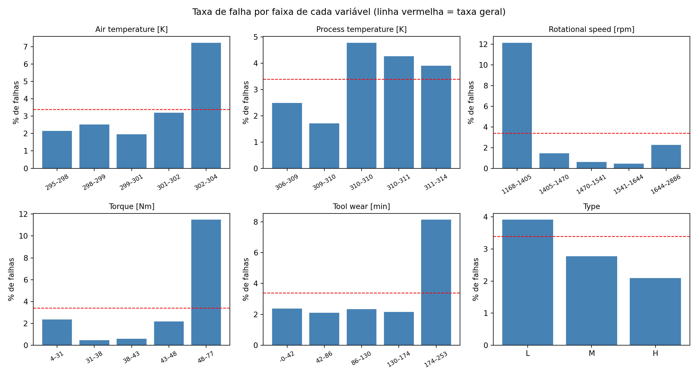
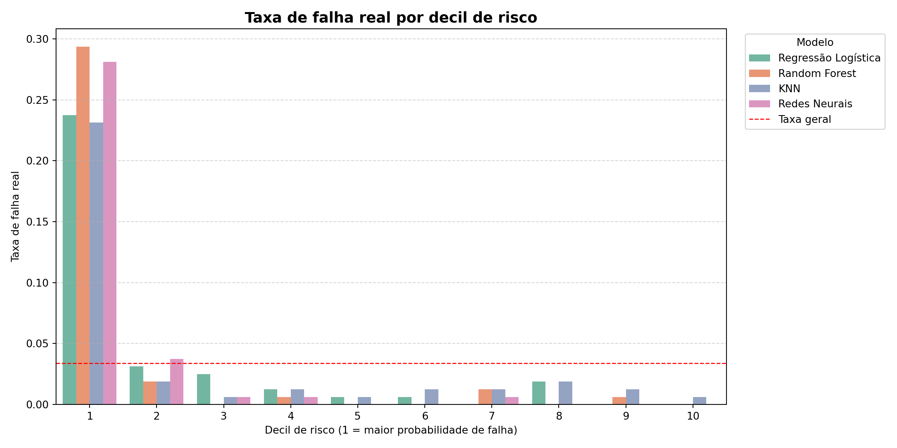
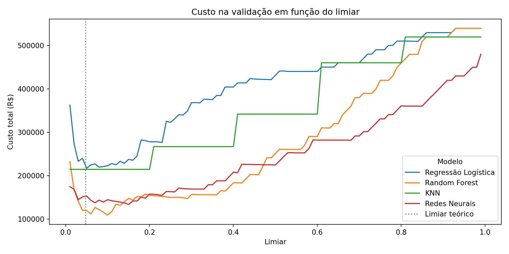

import pandas as pd
data = pd.read_csv('data/predictive_maintenance.csv')
data.head(10)2 Análise de Manutenção Preditiva
Uma indústria quer decidir quais equipamentos inspecionar antes que quebrem. Inspecionar sem necessidade custa pouco, mas uma quebra inesperada custa muito: o equilíbrio entre os dois erros é o centro do problema. Este capítulo constrói modelos de classificação que estimam a probabilidade de falha de um equipamento a partir de sensores operacionais e transforma essa probabilidade em uma regra de decisão.
Três perguntas guiam a análise:
- Descritiva: com que frequência ocorrem falhas e quais condições de operação estão associadas a elas?
- Preditiva: é possível antecipar uma falha a partir dos sensores? Quão melhor isso é do que não usar modelo algum?
- Decisão: sabendo que uma quebra custa muito mais do que uma inspeção, a partir de qual probabilidade vale a pena inspecionar?
Seguimos as etapas do CRISP-DM, como nos demais capítulos de modelagem:
| Etapa do CRISP-DM | Onde aparece no capítulo |
|---|---|
| Entendimento do negócio | Esta introdução |
| Entendimento dos dados | Dados e Análise descritiva |
| Preparação dos dados | Preparação dos dados e Separação dos dados |
| Modelagem | Modelos |
| Avaliação | Avaliação na validação, Impacto financeiro, Escolha do limiar e Erro de generalização |
| Implantação | Uso prático e implantação |
O trabalho é feito em Python (pandas, scikit-learn, seaborn), com R apenas para formatar as tabelas.
2.1 Dados
O conjunto de dados é o Predictive Maintenance Dataset (AI4I 2020, repositório UCI), uma base sintética que imita o comportamento de máquinas em um ambiente industrial. Cada linha é uma observação de um equipamento:
- UDI: identificador único da observação.
- Product ID: identificador do produto (a letra inicial coincide com
Type). - Type: qualidade do produto (L, M ou H).
- Air temperature [K]: temperatura do ar durante a operação.
- Process temperature [K]: temperatura do processo.
- Rotational speed [rpm]: velocidade de rotação.
- Torque [Nm]: torque aplicado.
- Tool wear [min]: tempo de desgaste da ferramenta.
- Target: variável alvo, 1 se ocorreu falha e 0 caso contrário.
- Failure Type: tipo da falha, quando há.
| UDI | Product ID | Type | Air temperature [K] | Process temperature [K] | Rotational speed [rpm] | Torque [Nm] | Tool wear [min] | Target | Failure Type |
|---|---|---|---|---|---|---|---|---|---|
| 1 | M14860 | M | 298.1 | 308.6 | 1551 | 42.8 | 0 | 0 | No Failure |
| 2 | L47181 | L | 298.2 | 308.7 | 1408 | 46.3 | 3 | 0 | No Failure |
| 3 | L47182 | L | 298.1 | 308.5 | 1498 | 49.4 | 5 | 0 | No Failure |
| 4 | L47183 | L | 298.2 | 308.6 | 1433 | 39.5 | 7 | 0 | No Failure |
| 5 | L47184 | L | 298.2 | 308.7 | 1408 | 40.0 | 9 | 0 | No Failure |
| 6 | M14865 | M | 298.1 | 308.6 | 1425 | 41.9 | 11 | 0 | No Failure |
| 7 | L47186 | L | 298.1 | 308.6 | 1558 | 42.4 | 14 | 0 | No Failure |
| 8 | L47187 | L | 298.1 | 308.6 | 1527 | 40.2 | 16 | 0 | No Failure |
| 9 | M14868 | M | 298.3 | 308.7 | 1667 | 28.6 | 18 | 0 | No Failure |
| 10 | M14869 | M | 298.5 | 309.0 | 1741 | 28.0 | 21 | 0 | No Failure |
AvisoDados e limitações
- A base é sintética: os padrões encontrados aqui valem para a forma como ela foi gerada e não necessariamente para uma fábrica real.
- Não há ordem temporal entre as observações, então não é possível avaliar o modelo “no futuro”.
- Os custos usados na decisão (inspeção e quebra) são hipotéticos, escolhidos para ilustrar o raciocínio. Em um projeto real, devem vir da área de manutenção.
- A variável
Failure Typesó é conhecida depois da falha, por isso não pode ser usada como preditora (veja a seção seguinte).
2.2 Análise descritiva
Começamos pelo tamanho da base, valores faltantes e duplicatas.
num = {} # números que serão citados no texto
def fmt_int(x):
return f"{int(round(x)):,}".replace(",", ".")
def brl(x):
return "R$ " + fmt_int(x)
def pct(x, d=1):
return f"{100 * x:.{d}f}".replace(".", ",") + "%"
num['n_obs'] = fmt_int(data.shape[0])
num['n_var'] = fmt_int(data.shape[1])
print("Número de observações:", data.shape[0])Número de observações: 10000print("Número de variáveis:", data.shape[1])Número de variáveis: 10print("\nValores faltantes:\n", data.isnull().sum())
Valores faltantes:
UDI 0
Product ID 0
Type 0
Air temperature [K] 0
Process temperature [K] 0
Rotational speed [rpm] 0
Torque [Nm] 0
Tool wear [min] 0
Target 0
Failure Type 0
dtype: int64print("\nObservações duplicadas:", data.duplicated().sum())
Observações duplicadas: 0A base tem 10.000 observações e 10 variáveis. Agora, a frequência da variável alvo e das variáveis categóricas.
target_counts = data['Target'].value_counts()
target_pct = data['Target'].value_counts(normalize=True) * 100
print("Frequência de Target:\n", target_counts)Frequência de Target:
Target
0 9661
1 339
Name: count, dtype: int64print("\nPorcentagem de Target:\n", target_pct.round(2))
Porcentagem de Target:
Target
0 96.61
1 3.39
Name: proportion, dtype: float64print("\nFrequência de Type:\n", data['Type'].value_counts())
Frequência de Type:
Type
L 6000
M 2997
H 1003
Name: count, dtype: int64print("\nFrequência de Failure Type:\n", data['Failure Type'].value_counts())
Frequência de Failure Type:
Failure Type
No Failure 9652
Heat Dissipation Failure 112
Power Failure 95
Overstrain Failure 78
Tool Wear Failure 45
Random Failures 18
Name: count, dtype: int64
num['n_falhas'] = fmt_int(target_counts[1])
num['pct_falhas'] = pct(target_pct[1] / 100)
num['pct_nao_falhas'] = pct(target_pct[0] / 100)Apenas 3,4% das observações são falhas (339 casos). Isso tem uma consequência importante: um “modelo” que sempre diz “não há falha” já acerta 96,6% das observações. Por isso, acurácia sozinha não serve para avaliar os modelos deste capítulo, e vamos compará-los a essa referência ao longo do texto.
Estatísticas descritivas das variáveis numéricas:
num_cols = ['Air temperature [K]', 'Process temperature [K]',
'Rotational speed [rpm]', 'Torque [Nm]', 'Tool wear [min]']
cat_cols = ['Type']
desc = data[num_cols].describe().T.round(2).reset_index()
desc = desc.rename(columns={'index': 'Variável'})| Variável | count | mean | std | min | 25% | 50% | 75% | max |
|---|---|---|---|---|---|---|---|---|
| Air temperature [K] | 10000 | 300.00 | 2.00 | 295.3 | 298.3 | 300.1 | 301.5 | 304.5 |
| Process temperature [K] | 10000 | 310.01 | 1.48 | 305.7 | 308.8 | 310.1 | 311.1 | 313.8 |
| Rotational speed [rpm] | 10000 | 1538.78 | 179.28 | 1168.0 | 1423.0 | 1503.0 | 1612.0 | 2886.0 |
| Torque [Nm] | 10000 | 39.99 | 9.97 | 3.8 | 33.2 | 40.1 | 46.8 | 76.6 |
| Tool wear [min] | 10000 | 107.95 | 63.65 | 0.0 | 53.0 | 108.0 | 162.0 | 253.0 |
2.2.1 Relação das variáveis com a falha
Em vez de uma matriz de correlação, olhamos diretamente a taxa de falha em cada faixa de cada variável (dividida em quintis). Isso é mais informativo do que um coeficiente de correlação, porque a relação entre sensores e falha costuma não ser linear: falhas podem ocorrer tanto com valores muito baixos quanto muito altos.
taxa_geral = data['Target'].mean() * 100
fig, axes = plt.subplots(2, 3, figsize=(13, 7))
axes = axes.ravel()
for ax, col in zip(axes, num_cols):
faixa = pd.qcut(data[col], 5, duplicates='drop')
taxa = data.groupby(faixa, observed=True)['Target'].mean() * 100
ax.bar(range(len(taxa)), taxa.values, color='steelblue')
ax.set_xticks(range(len(taxa)))
ax.set_xticklabels([f"{i.left:.0f}–{i.right:.0f}" for i in taxa.index],
rotation=30, fontsize=8)
ax.axhline(taxa_geral, color='red', linestyle='--', linewidth=1)
ax.set_title(col, fontsize=10)
ax.set_ylabel('% de falhas')
taxa_type = data.groupby('Type')['Target'].mean().reindex(['L', 'M', 'H']) * 100
axes[5].bar(taxa_type.index, taxa_type.values, color='steelblue')
axes[5].axhline(taxa_geral, color='red', linestyle='--', linewidth=1)
axes[5].set_title('Type', fontsize=10)
axes[5].set_ylabel('% de falhas')
plt.suptitle('Taxa de falha por faixa de cada variável (linha vermelha = taxa geral)')
plt.tight_layout()
plt.show()
Faixas em que a barra passa bem acima da linha vermelha concentram mais falhas. Veja também a mediana de cada sensor entre máquinas com e sem falha:
tab_med = data.groupby('Target')[num_cols].median().T.round(1).reset_index()
tab_med.columns = ['Variável', 'Mediana (sem falha)', 'Mediana (com falha)']| Variável | Mediana (sem falha) | Mediana (com falha) |
|---|---|---|
| Air temperature [K] | 300.0 | 301.6 |
| Process temperature [K] | 310.0 | 310.4 |
| Rotational speed [rpm] | 1507.0 | 1365.0 |
| Torque [Nm] | 39.9 | 53.7 |
| Tool wear [min] | 107.0 | 165.0 |
Por que Failure Type fica de fora
Failure Type descreve a falha que já aconteceu. Usá-la para prever a falha seria vazamento de informação (data leakage): o modelo “saberia” a resposta por construção.
tab_ft = (pd.crosstab(data['Failure Type'], data['Target'])
.rename(columns={0: 'Target = 0', 1: 'Target = 1'})
.rename_axis(columns=None)
.reset_index())
n_incons = int(((data['Target'] == 1) & (data['Failure Type'] == 'No Failure')).sum()
+ ((data['Target'] == 0) & (data['Failure Type'] != 'No Failure')).sum())
num['n_incons'] = fmt_int(n_incons)| Failure Type | Target = 0 | Target = 1 |
|---|---|---|
| Heat Dissipation Failure | 0 | 112 |
| No Failure | 9643 | 9 |
| Overstrain Failure | 0 | 78 |
| Power Failure | 0 | 95 |
| Random Failures | 18 | 0 |
| Tool Wear Failure | 0 | 45 |
Note ainda que há 27 registros em que Target e Failure Type não concordam (por exemplo, falha registrada sem tipo de falha). Em um projeto real, isso seria levado a quem gerou os dados. Aqui mantemos Target como está.
2.3 Preparação dos dados
Removemos os identificadores (UDI, Product ID) e Failure Type. As variáveis explicativas são os cinco sensores e o Type.
X = data[num_cols + cat_cols]
y = data['Target']As etapas de transformação (padronização dos sensores e dummies para Type) não são feitas aqui, mas dentro de um Pipeline junto com cada modelo. Assim elas são aprendidas só com o treino e reaplicadas automaticamente a dados novos, o que evita vazamento e simplifica a implantação.
DicaPor que padronizar?
Regressão logística, KNN e redes neurais são sensíveis à escala das variáveis: sem padronização, Rotational speed (na casa dos milhares) domina Tool wear (dezenas) e o treinamento fica instável. Florestas aleatórias não dependem da escala, mas usá-las no mesmo pipeline não prejudica.
2.3.1 Separação dos dados
Dividimos em treino (64%), validação (16%) e teste (20%), de forma estratificada pela variável alvo. Como as falhas são raras, a estratificação garante que os três conjuntos tenham a mesma proporção de falhas.
from sklearn.model_selection import train_test_split
X_trval, X_test, y_trval, y_test = train_test_split(
X, y, test_size=0.20, stratify=y, random_state=42)
X_train, X_val, y_train, y_val = train_test_split(
X_trval, y_trval, test_size=0.20, stratify=y_trval, random_state=42)
tab_split = pd.DataFrame({
'Conjunto': ['Treino', 'Validação', 'Teste'],
'Observações': [len(y_train), len(y_val), len(y_test)],
'Falhas': [int(y_train.sum()), int(y_val.sum()), int(y_test.sum())],
})
tab_split['% de falhas'] = (100 * tab_split['Falhas'] / tab_split['Observações']).round(2)
num['n_falhas_val'] = fmt_int(y_val.sum())
num['n_falhas_test'] = fmt_int(y_test.sum())| Conjunto | Observações | Falhas | % de falhas |
|---|---|---|---|
| Treino | 6400 | 217 | 3.39 |
| Validação | 1600 | 54 | 3.38 |
| Teste | 2000 | 68 | 3.40 |
A validação tem apenas 54 falhas e o teste, 68. Com tão poucos casos positivos, as métricas variam bastante de uma amostra para outra, e isso deve ser lembrado ao comparar modelos próximos.
2.4 Modelos
Comparamos quatro algoritmos: regressão logística, floresta aleatória, KNN e rede neural. Todos entram em um pipeline com padronização dos sensores. Incluímos também um modelo de referência (baseline) que prevê sempre a classe mais frequente (“sem falha”), a régua mínima que qualquer modelo precisa superar.
from sklearn.base import clone
from sklearn.compose import ColumnTransformer
from sklearn.dummy import DummyClassifier
from sklearn.ensemble import RandomForestClassifier
from sklearn.linear_model import LogisticRegression
from sklearn.neighbors import KNeighborsClassifier
from sklearn.neural_network import MLPClassifier
from sklearn.pipeline import Pipeline
from sklearn.preprocessing import OneHotEncoder, StandardScaler
preproc = ColumnTransformer([
('num', StandardScaler(), num_cols),
('cat', OneHotEncoder(drop='first'), cat_cols),
])
def montar_pipeline(modelo):
return Pipeline([('prep', clone(preproc)), ('modelo', modelo)])
modelos = {
"Regressão Logística": montar_pipeline(LogisticRegression(max_iter=1000)),
"Random Forest": montar_pipeline(RandomForestClassifier(random_state=42)),
"KNN": montar_pipeline(KNeighborsClassifier()),
"Redes Neurais": montar_pipeline(MLPClassifier(max_iter=500, random_state=42)),
}
baseline = DummyClassifier(strategy='most_frequent')
baseline.fit(X_train, y_train)DummyClassifier(strategy='most_frequent')In a Jupyter environment, please rerun this cell to show the HTML representation or trust the notebook.
On GitHub, the HTML representation is unable to render, please try loading this page with nbviewer.org.
Parameters
for nome, m in modelos.items():
m.fit(X_train, y_train)Pipeline(steps=[('prep',
ColumnTransformer(transformers=[('num', StandardScaler(),
['Air temperature [K]',
'Process temperature [K]',
'Rotational speed [rpm]',
'Torque [Nm]',
'Tool wear [min]']),
('cat',
OneHotEncoder(drop='first'),
['Type'])])),
('modelo', MLPClassifier(max_iter=500, random_state=42))])In a Jupyter environment, please rerun this cell to show the HTML representation or trust the notebook. On GitHub, the HTML representation is unable to render, please try loading this page with nbviewer.org.
Parameters
Parameters
['Air temperature [K]', 'Process temperature [K]', 'Rotational speed [rpm]', 'Torque [Nm]', 'Tool wear [min]']
Parameters
['Type']
Parameters
Parameters
2.4.1 Avaliação na validação
Todos os modelos estimam uma probabilidade de falha. Para virar uma previsão (“falha” ou “não falha”), é preciso um ponto de corte; começamos com o padrão de 0,50. Como a classe positiva é rara, usamos métricas que olham para ela:
- Precisão: dos alarmes emitidos, quantos eram falhas reais.
- Recall (sensibilidade): das falhas reais, quantas o modelo detectou.
- F1: média harmônica entre precisão e recall.
- AUC-ROC e AUC-PR: medem a qualidade do ranqueamento das probabilidades, sem depender do corte. A AUC-PR é a mais informativa com classes raras; o baseline tem AUC-PR igual à proporção de falhas.
from sklearn.metrics import (accuracy_score, average_precision_score,
confusion_matrix, f1_score, precision_score,
recall_score, roc_auc_score)
def calcular_metricas(nome, modelo, X_, y_, limiar=0.5):
prob = modelo.predict_proba(X_)[:, 1]
pred = (prob >= limiar).astype(int)
tn, fp, fn, tp = confusion_matrix(y_, pred, labels=[0, 1]).ravel()
return {
'Modelo': nome,
'Acurácia': accuracy_score(y_, pred),
'Precisão': precision_score(y_, pred, zero_division=0),
'Recall': recall_score(y_, pred, zero_division=0),
'F1': f1_score(y_, pred, zero_division=0),
'AUC-ROC': roc_auc_score(y_, prob),
'AUC-PR': average_precision_score(y_, prob),
'FP': fp,
'FN': fn,
}
linhas = [calcular_metricas("Baseline (sempre 'sem falha')", baseline, X_val, y_val)]
linhas += [calcular_metricas(nome, m, X_val, y_val) for nome, m in modelos.items()]
tab_metricas = pd.DataFrame(linhas).round(3)
num['acc_base'] = pct(tab_metricas.loc[0, 'Acurácia'])
melhor_prauc = tab_metricas.iloc[1:].sort_values('AUC-PR', ascending=False).iloc[0]
num['melhor_prauc'] = melhor_prauc['Modelo']
num['valor_prauc'] = f"{melhor_prauc['AUC-PR']:.2f}".replace(".", ",")
num['prauc_base'] = f"{tab_metricas.loc[0, 'AUC-PR']:.2f}".replace(".", ",")| Modelo | Acurácia | Precisão | Recall | F1 | AUC-ROC | AUC-PR | FP | FN |
|---|---|---|---|---|---|---|---|---|
| Baseline (sempre 'sem falha') | 0.966 | 0.000 | 0.000 | 0.000 | 0.500 | 0.034 | 0 | 54 |
| Regressão Logística | 0.971 | 0.786 | 0.204 | 0.324 | 0.893 | 0.456 | 3 | 43 |
| Random Forest | 0.983 | 0.935 | 0.537 | 0.682 | 0.943 | 0.779 | 2 | 25 |
| KNN | 0.976 | 0.833 | 0.370 | 0.513 | 0.827 | 0.479 | 4 | 34 |
| Redes Neurais | 0.981 | 0.780 | 0.593 | 0.674 | 0.958 | 0.726 | 9 | 22 |
O baseline atinge 96,6% de acurácia sem detectar nenhuma falha (recall igual a zero). Isso mostra por que a acurácia engana. Pela AUC-PR, o melhor ranqueamento na validação foi o de Random Forest (0,78, contra 0,03 do baseline).
2.4.2 Probabilidades preditas: um exemplo
Para ver como cada modelo avalia o risco antes do ponto de corte, sorteamos 10 máquinas com falha e 10 sem falha na validação e comparamos as probabilidades estimadas.
idx = pd.concat([
y_val[y_val == 0].sample(n=10, random_state=42),
y_val[y_val == 1].sample(n=10, random_state=42),
]).sample(frac=1, random_state=42).index
df_amostra = pd.DataFrame({'Target_Real': y_val.loc[idx]})
for nome, m in modelos.items():
df_amostra[f'Prob_{nome}'] = np.round(m.predict_proba(X_val.loc[idx])[:, 1], 4)
df_amostra = df_amostra.reset_index(drop=True)| Target_Real | Prob_Regressão Logística | Prob_Random Forest | Prob_KNN | Prob_Redes Neurais |
|---|---|---|---|---|
| 0 | 0.0248 | 0.02 | 0.0 | 0.0421 |
| 1 | 0.0030 | 0.11 | 0.0 | 0.0154 |
| 1 | 0.0304 | 0.00 | 0.0 | 0.0989 |
| 0 | 0.0550 | 0.00 | 0.2 | 0.0039 |
| 0 | 0.0044 | 0.00 | 0.0 | 0.0000 |
| 0 | 0.0013 | 0.00 | 0.0 | 0.0001 |
| 1 | 0.2386 | 0.47 | 0.2 | 0.5739 |
| 0 | 0.0047 | 0.00 | 0.0 | 0.0001 |
| 1 | 0.4018 | 0.60 | 0.4 | 0.7252 |
| 1 | 0.4976 | 0.29 | 0.0 | 0.5811 |
| 1 | 0.2323 | 0.84 | 0.8 | 0.9802 |
| 0 | 0.0323 | 0.06 | 0.0 | 0.1846 |
| 0 | 0.0385 | 0.01 | 0.0 | 0.0401 |
| 1 | 0.1217 | 0.42 | 0.0 | 0.1941 |
| 0 | 0.0008 | 0.00 | 0.0 | 0.0000 |
| 1 | 0.1767 | 0.80 | 0.6 | 0.8897 |
| 0 | 0.0023 | 0.00 | 0.0 | 0.0000 |
| 1 | 0.0024 | 0.13 | 0.0 | 0.0013 |
| 1 | 0.0322 | 0.66 | 0.0 | 0.5279 |
| 0 | 0.0019 | 0.00 | 0.0 | 0.0001 |
Modelos diferentes atribuem probabilidades diferentes à mesma máquina. Definir o ponto de corte é o que transforma cada uma dessas probabilidades em “inspecionar” ou “não inspecionar”.
2.4.3 Capacidade de ordenar o risco (decis)
Em manutenção, nem sempre dá para inspecionar tudo: é comum ter uma fila de prioridade. Ordenamos as máquinas da validação da maior para a menor probabilidade, dividimos em 10 grupos (decis) e calculamos a taxa de falha real em cada um. Um bom modelo concentra as falhas nos primeiros decis.
df_prob = pd.DataFrame({'Target_Real': y_val})
for nome, m in modelos.items():
df_prob[f'Prob_{nome}'] = m.predict_proba(X_val)[:, 1]
def performance_decil(df, col_prob, nome):
d = df[['Target_Real', col_prob]].copy()
# decil 1 = 10% das máquinas com maior probabilidade de falha
d['Decil'] = pd.qcut(d[col_prob].rank(method='first', ascending=False),
10, labels=range(1, 11)).astype(int)
out = (d.groupby('Decil')
.agg(total=('Target_Real', 'count'), falhas=('Target_Real', 'sum'))
.reset_index())
out['Taxa_Falha'] = out['falhas'] / out['total']
out['Modelo'] = nome
return out
analise_decis = pd.concat([performance_decil(df_prob, f'Prob_{n}', n) for n in modelos])
plt.figure(figsize=(12, 6))
sns.barplot(data=analise_decis, x='Decil', y='Taxa_Falha', hue='Modelo', palette='Set2')
plt.axhline(y_val.mean(), color='red', linestyle='--', linewidth=1, label='Taxa geral')
plt.title('Taxa de falha real por decil de risco', fontsize=14, fontweight='bold')
plt.ylabel('Taxa de falha real')
plt.xlabel('Decil de risco (1 = maior probabilidade de falha)')
plt.grid(True, axis='y', linestyle='--', alpha=0.5)
plt.legend(title='Modelo', bbox_to_anchor=(1.02, 1), loc='upper left')
plt.tight_layout()
plt.show()
captura = (analise_decis[analise_decis['Decil'] <= 2]
.groupby('Modelo')['falhas'].sum() / y_val.sum())
captura = (captura.mul(100).round(1).rename('% das falhas nos 20% de maior risco')
.reset_index())| Modelo | % das falhas nos 20% de maior risco |
|---|---|
| KNN | 74.1 |
| Random Forest | 92.6 |
| Redes Neurais | 94.4 |
| Regressão Logística | 79.6 |
Inspecionando apenas os 20% de máquinas de maior risco, o modelo captura a parcela das falhas mostrada na tabela. Um sorteio aleatório capturaria cerca de 20%.
2.5 Impacto financeiro e escolha do limiar
A escolha do melhor modelo depende do custo de cada erro. Vamos supor, de forma ilustrativa, que:
- uma inspeção desnecessária (falso positivo, FP) custa R$ 500;
- uma quebra não detectada (falso negativo, FN) custa R$ 10.000, ou seja, 20 vezes mais.
CUSTO_FP, CUSTO_FN = 500, 10000
def custo_total(y_, prob, limiar):
pred = (prob >= limiar).astype(int)
tn, fp, fn, tp = confusion_matrix(y_, pred, labels=[0, 1]).ravel()
return fp * CUSTO_FP + fn * CUSTO_FN, fp, fn, tp
# Referências de negócio: nunca alertar e inspecionar tudo
custo_nunca = int(y_val.sum()) * CUSTO_FN
custo_tudo = int((y_val == 0).sum()) * CUSTO_FP
linhas = []
for nome in modelos:
c, fp, fn, tp = custo_total(y_val, df_prob[f'Prob_{nome}'], 0.5)
linhas.append({'Modelo': nome, 'FP': fp, 'FN': fn, 'Custo total (R$)': c})
df_custos = pd.DataFrame(linhas)
df_custos = pd.concat([df_custos, pd.DataFrame([
{'Modelo': 'Referência: nunca alertar', 'FP': 0, 'FN': int(y_val.sum()),
'Custo total (R$)': custo_nunca},
{'Modelo': 'Referência: inspecionar tudo', 'FP': int((y_val == 0).sum()), 'FN': 0,
'Custo total (R$)': custo_tudo},
])]).sort_values('Custo total (R$)').reset_index(drop=True)
so_modelos = df_custos[df_custos['Modelo'].isin(modelos)]
num['melhor_050'] = so_modelos.iloc[0]['Modelo']
num['custo_min_050'] = brl(so_modelos.iloc[0]['Custo total (R$)'])
num['pior_050'] = so_modelos.iloc[-1]['Modelo']
num['custo_pior_050'] = brl(so_modelos.iloc[-1]['Custo total (R$)'])
num['custo_nunca'] = brl(custo_nunca)
num['custo_tudo'] = brl(custo_tudo)| Modelo | FP | FN | Custo total (R$) |
|---|---|---|---|
| Redes Neurais | 9 | 22 | 224500 |
| Random Forest | 2 | 25 | 251000 |
| KNN | 4 | 34 | 342000 |
| Regressão Logística | 3 | 43 | 431500 |
| Referência: nunca alertar | 0 | 54 | 540000 |
| Referência: inspecionar tudo | 1546 | 0 | 773000 |
Com o corte padrão, o modelo de menor custo foi Redes Neurais (R$ 224.500) e o de maior custo foi Regressão Logística (R$ 431.500). Para comparação, nunca alertar custaria R$ 540.000 e inspecionar todas as máquinas, R$ 773.000.
Note que o ranking por custo pode ser diferente do ranking por acurácia. Um modelo muito conservador, que só alerta quando tem quase certeza (poucos FP), pode ter acurácia alta e ainda assim sair caro por deixar passar muitas quebras (muitos FN). Em manutenção preditiva, em geral é preferível um modelo “barulhento” (mais inspeções desnecessárias) a um “míope” (mais quebras não detectadas).
2.5.1 Escolha do limiar
O corte de 0,50 supõe que os dois erros custam o mesmo, o que não é o caso. Se as probabilidades fossem bem calibradas, valeria a pena inspecionar sempre que a probabilidade de falha \(p\) superasse
\[ \frac{c_{FP}}{c_{FP} + c_{FN}} = \frac{500}{500 + 10000} \approx 0{,}048. \]
Como as probabilidades dos modelos nem sempre são bem calibradas, procuramos o limiar empiricamente: testamos limiares de 0,01 a 0,99 na validação e ficamos com o que minimiza o custo de cada modelo.
limiares = np.round(np.arange(0.01, 1.00, 0.01), 2)
curvas, linhas = [], []
for nome in modelos:
prob = df_prob[f'Prob_{nome}']
custos = [custo_total(y_val, prob, t)[0] for t in limiares]
curvas.append(pd.DataFrame({'Limiar': limiares, 'Custo': custos, 'Modelo': nome}))
t_otimo = limiares[int(np.argmin(custos))]
c, fp, fn, tp = custo_total(y_val, prob, t_otimo)
c050 = custo_total(y_val, prob, 0.5)[0]
linhas.append({
'Modelo': nome,
'Limiar ótimo': t_otimo,
'FP': fp, 'FN': fn,
'Recall': round(tp / (tp + fn), 3),
'Precisão': round(tp / (tp + fp), 3) if (tp + fp) > 0 else 0.0,
'Custo com corte 0,50 (R$)': c050,
'Custo com limiar ótimo (R$)': c,
})
df_curvas = pd.concat(curvas)
df_limiares = pd.DataFrame(linhas).sort_values('Custo com limiar ótimo (R$)').reset_index(drop=True)
plt.figure(figsize=(10, 5))
sns.lineplot(data=df_curvas, x='Limiar', y='Custo', hue='Modelo')
plt.axvline(CUSTO_FP / (CUSTO_FP + CUSTO_FN), color='gray', linestyle=':', label='Limiar teórico')
plt.title('Custo na validação em função do limiar')
plt.ylabel('Custo total (R$)')
plt.legend(title='Modelo')
plt.tight_layout()
plt.show()
melhor = df_limiares.iloc[0]
melhor_nome = melhor['Modelo']
limiar_final = float(melhor['Limiar ótimo'])
num['limiar_teorico'] = f"{CUSTO_FP / (CUSTO_FP + CUSTO_FN):.3f}".replace(".", ",")
num['melhor_nome'] = melhor_nome
num['limiar_final'] = f"{limiar_final:.2f}".replace(".", ",")
num['custo_melhor_otimo'] = brl(melhor['Custo com limiar ótimo (R$)'])
num['custo_melhor_050'] = brl(melhor['Custo com corte 0,50 (R$)'])
num['recall_melhor'] = pct(melhor['Recall'], 0)
num['precisao_melhor'] = pct(melhor['Precisão'], 0)| Modelo | Limiar ótimo | FP | FN | Recall | Precisão | Custo com corte 0,50 (R$) | Custo com limiar ótimo (R$) |
|---|---|---|---|---|---|---|---|
| Random Forest | 0.10 | 78 | 7 | 0.870 | 0.376 | 251000 | 109000 |
| Redes Neurais | 0.15 | 47 | 11 | 0.796 | 0.478 | 224500 | 133500 |
| KNN | 0.01 | 89 | 17 | 0.685 | 0.294 | 342000 | 214500 |
| Regressão Logística | 0.05 | 194 | 12 | 0.778 | 0.178 | 431500 | 217000 |
O modelo escolhido é Random Forest, com limiar de 0,10 (o teórico seria 0,048). Na validação, esse corte detecta 87% das falhas, com precisão de 38%, e o custo cai de R$ 251.000 (corte 0,50) para R$ 109.000.
Repare que reduzir o limiar aumenta o recall e derruba a precisão: aceitamos mais alarmes falsos para deixar passar menos quebras. Como o limiar foi escolhido na validação, o custo mostrado ali é otimista. A estimativa honesta vem do conjunto de teste, a seguir.
2.6 Erro de generalização
Reestimamos o modelo escolhido com treino e validação juntos e o avaliamos uma única vez no conjunto de teste, aplicando o limiar definido na validação. Comparamos com as duas referências de negócio e com o corte padrão de 0,50.
modelo_final = clone(modelos[melhor_nome])
modelo_final.fit(pd.concat([X_train, X_val]), pd.concat([y_train, y_val]))Pipeline(steps=[('prep',
ColumnTransformer(transformers=[('num', StandardScaler(),
['Air temperature [K]',
'Process temperature [K]',
'Rotational speed [rpm]',
'Torque [Nm]',
'Tool wear [min]']),
('cat',
OneHotEncoder(drop='first'),
['Type'])])),
('modelo', RandomForestClassifier(random_state=42))])In a Jupyter environment, please rerun this cell to show the HTML representation or trust the notebook. On GitHub, the HTML representation is unable to render, please try loading this page with nbviewer.org.
Parameters
Parameters
['Air temperature [K]', 'Process temperature [K]', 'Rotational speed [rpm]', 'Torque [Nm]', 'Tool wear [min]']
Parameters
['Type']
Parameters
Parameters
prob_test = modelo_final.predict_proba(X_test)[:, 1]
c_lim, fp_l, fn_l, tp_l = custo_total(y_test, prob_test, limiar_final)
c_050, fp_5, fn_5, tp_5 = custo_total(y_test, prob_test, 0.5)
n_pos, n_neg = int(y_test.sum()), int((y_test == 0).sum())
def linha_teste(nome, fp, fn, tp, custo):
return {
'Estratégia': nome, 'FP': fp, 'FN': fn,
'Recall': round(tp / n_pos, 3),
'Precisão': round(tp / (tp + fp), 3) if (tp + fp) > 0 else 0.0,
'Custo total (R$)': custo,
}
tab_teste = pd.DataFrame([
linha_teste(f'{melhor_nome}, limiar {limiar_final:.2f}', fp_l, fn_l, tp_l, c_lim),
linha_teste(f'{melhor_nome}, corte 0,50', fp_5, fn_5, tp_5, c_050),
linha_teste('Nunca alertar', 0, n_pos, 0, n_pos * CUSTO_FN),
linha_teste('Inspecionar tudo', n_neg, 0, n_pos, n_neg * CUSTO_FP),
])
num['custo_teste'] = brl(c_lim)
num['custo_teste_050'] = brl(c_050)
num['custo_teste_nunca'] = brl(n_pos * CUSTO_FN)
num['custo_teste_tudo'] = brl(n_neg * CUSTO_FP)
num['recall_teste'] = pct(tp_l / n_pos, 0)
num['precisao_teste'] = pct(tp_l / (tp_l + fp_l), 0) if (tp_l + fp_l) > 0 else "0%"
num['fn_teste'] = fmt_int(fn_l)
num['fp_teste'] = fmt_int(fp_l)
num['aucpr_teste'] = f"{average_precision_score(y_test, prob_test):.2f}".replace(".", ",")| Estratégia | FP | FN | Recall | Precisão | Custo total (R$) |
|---|---|---|---|---|---|
| Random Forest, limiar 0.10 | 95 | 7 | 0.897 | 0.391 | 117500 |
| Random Forest, corte 0,50 | 4 | 33 | 0.515 | 0.897 | 332000 |
| Nunca alertar | 0 | 68 | 0.000 | 0.000 | 680000 |
| Inspecionar tudo | 1932 | 0 | 1.000 | 0.034 | 966000 |
No teste, o modelo com o limiar escolhido custa R$ 117.500, contra R$ 332.000 com o corte de 0,50, R$ 680.000 se nunca alertássemos e R$ 966.000 se inspecionássemos todas as máquinas. O modelo detecta 90% das falhas (deixando passar 7), ao custo de 95 inspeções sem falha (precisão de 39%). A AUC-PR no teste é 0,79.
2.7 Uso prático e implantação
Para que serve. O modelo funciona como apoio à priorização: ordena as máquinas por risco e sinaliza quais inspecionar primeiro, dado o custo relativo de inspeção e quebra.
Para que não serve. Não deve substituir inspeções de segurança obrigatórias nem ser usado como única barreira contra falhas críticas: mesmo com o melhor limiar, parte das falhas passa despercebida, e os custos usados aqui são hipotéticos.
Como usar em produção. Como a padronização e as dummies estão dentro do pipeline, basta salvar o modelo junto com o limiar e aplicá-los a dados brutos com as mesmas colunas do treinamento.
import joblib
joblib.dump({'modelo': modelo_final, 'limiar': limiar_final}, 'modelo_manutencao.joblib')
# em outra sessão
artefato = joblib.load('modelo_manutencao.joblib')
novas_maquinas = pd.DataFrame({
'Air temperature [K]': [298.5, 301.2],
'Process temperature [K]': [308.9, 311.4],
'Rotational speed [rpm]': [1500, 1350],
'Torque [Nm]': [42.0, 65.0],
'Tool wear [min]': [30, 210],
'Type': ['L', 'M'],
})
prob = artefato['modelo'].predict_proba(novas_maquinas)[:, 1]
novas_maquinas['prob_falha'] = prob
novas_maquinas['inspecionar'] = prob >= artefato['limiar']
novas_maquinasAo colocar o modelo em uso definitivo, vale reestimá-lo com todos os dados (treino, validação e teste), mantendo o limiar escolhido.
Manutenção do modelo.
- Monitorar a taxa de falha observada e o custo real de inspeções e quebras.
- Reavaliar o limiar sempre que os custos mudarem: ele depende diretamente da razão entre o custo de uma quebra e o de uma inspeção.
- Retreinar periodicamente, pois mudanças em equipamentos, produtos ou condições de operação alteram o padrão dos sensores.
2.8 Conclusão
Com 10.000 observações e 3,4% de falhas, comparamos quatro modelos de classificação a um baseline que nunca prevê falha. Como a acurácia do baseline é 96,6%, avaliamos os modelos por precisão, recall, AUC-PR e, principalmente, pelo custo das decisões. O modelo escolhido na validação foi Random Forest, com limiar de 0,10. No teste, ele custa R$ 117.500, contra R$ 680.000 de nunca alertar.
O ponto central é que o corte de decisão importa tanto quanto o modelo: com custos assimétricos, o limiar de 0,50 é quase nunca o mais adequado.
Limitações:
- A base é sintética e sem ordem temporal; o desempenho em uma fábrica real pode ser diferente.
- Os custos de inspeção e quebra são hipotéticos.
- Há poucas falhas na validação e no teste, então as diferenças entre modelos próximos e o custo estimado são incertos.
- Os modelos usam hiperparâmetros padrão, sem ajuste fino nem validação cruzada.
- O limiar foi escolhido em um único conjunto de validação.
- Há registros em que
TargeteFailure Typediscordam, e não investigamos a origem.
Próximos passos: ajustar hiperparâmetros com validação cruzada estratificada, calibrar as probabilidades (por exemplo, com CalibratedClassifierCV), testar class_weight para lidar com o desbalanceamento e escolher o limiar por validação cruzada, para obter uma estimativa de custo mais estável.